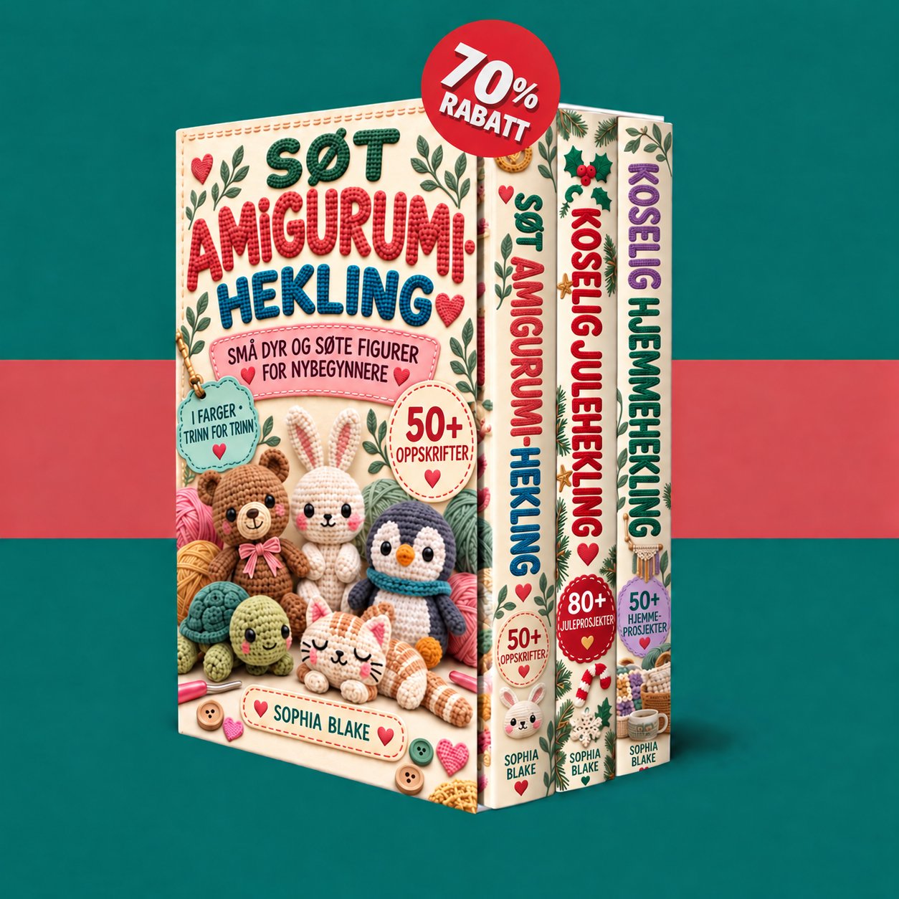

Tilgangen din er bekreftet. Utforsk de tre heklebøkene dine, og begynn med små dyr, julepynt eller koselige prosjekter til hjemmet ditt.

Heklebøkene dine lastes inn…
Aktiver JavaScript for å bruke medlemsområdet. Du kan også åpne PDF-filene direkte via lenkene nedenfor.